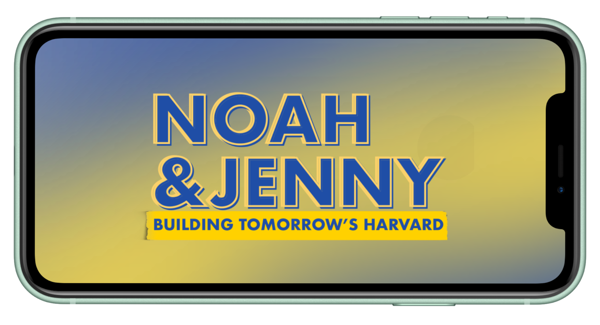
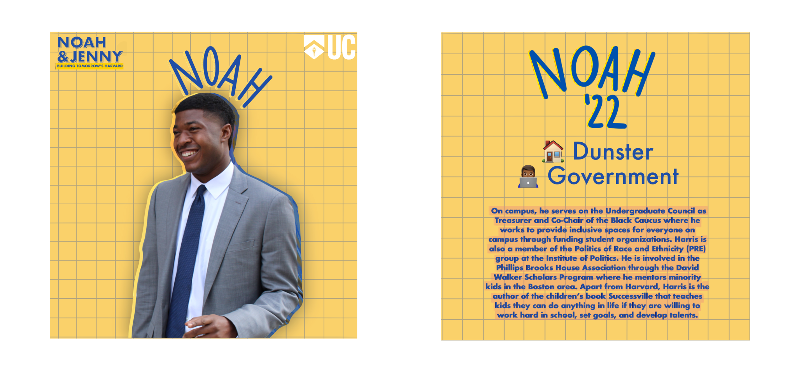
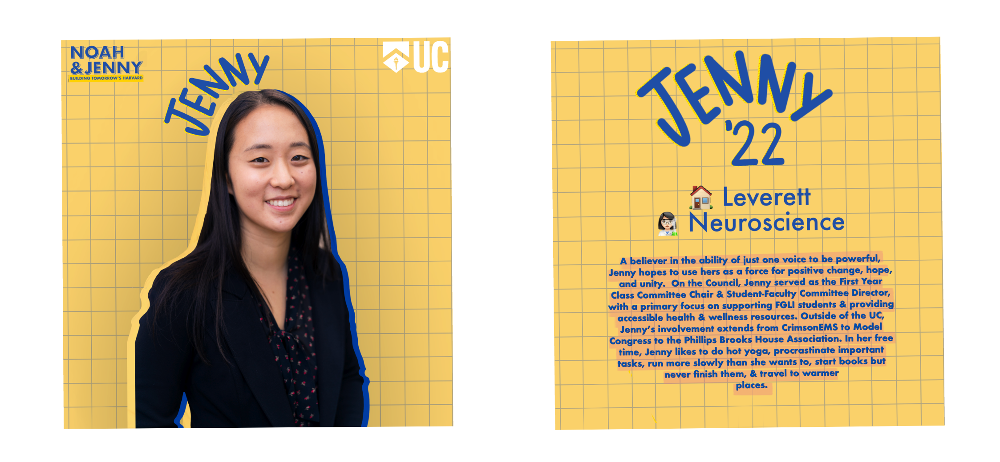
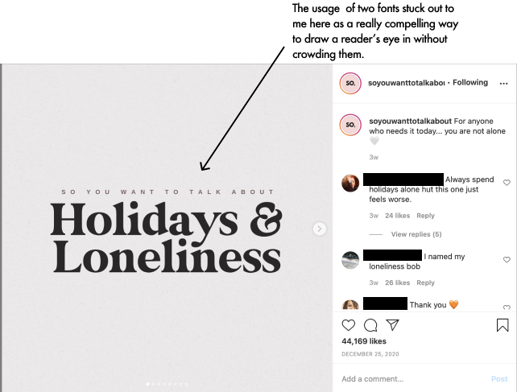
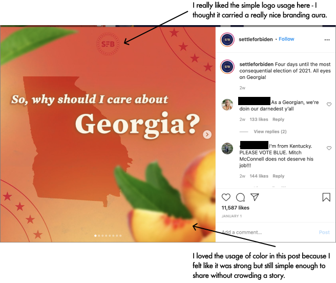

Noah and Jenny's UC Campaign
Designing to Win
Instagram • Branding • November 2020

Introduction
This past year, one of the most fun projects I got to be a part of was the branding and design for Noah Harris and Jenny Gan. A ticket that would make Harvard history with Noah being the first Black man ever elected to Harvard undergraduate council president, they had to adapt to a virtual run. Taking cues from the national campaigns, I got the opportunity to design not only their branding and Instagram feed, but also their aura and the vibe that won them the election.
Design Process
Colors were probably the simplest part of this process for me. I focused in on warm and traditional colors that I associated with school folders. When picking the colors, I intentionally stayed away from Harvard crimson. After all, the color was chosen for students that didn't look like Noah and Jenny and I wanted the campaign to focus in on the future. For all content that featured them, I made use of emojis and softer tones to make them feel as welcoming as possible.


One of the biggest challenges I found was the most important: Instagram content around specific aspects of their platform. I struggled to figure out how I was going to design posts that accomplished two goals:
- They were shareable. I wanted posts that were as easy to share as they were to look at. So, covers couldn't be too busy but they had to grab the anxious and distracted eye of Instagram users.
- They had to show as much information as possible. With all of Noah and Jenny's campaign events being on Zoom, the likelihood of students coming to election debates or reading the newsletters was slim. So, I needed viewers to have a clear understanding of their platform in a bite-sized fashion.
So, I began cruising the Internet and looking for what made those Instagram infographics that were insanely viral so well, viral. Luckily, we were still in the midst of the 200-year long 2020 election at the time so there was a ton of material to look at.
In this research, I found two main points to be true:
- Catchy text is key. Nearly all of the infographics I looked at featured some kind of conversational opening. "Why YOU should care about ...." and "WE did it!" was a staple of these posts. The more it seemed like the designer was talking straight to the user, the more viral the post.
- Fun colors are good to a point. I noticed that designers made use of a lot of gradient and monochrome color palettes. I realized why pretty soon: because of Instagram's story color picker for the background, the more monochrome a post cover is, the nicer the post looks on a story. Instagram is all about color aesthetic so the posts - no matter how important the information inside - had to be too.


So, why does this matter?
Besides the goal of giving Noah and Jenny the best shot at winning, I wanted this campaign to feel futuristic in some senses. Harvard is an incredibly traditional place in many ways and they weren't traditional candidates. I wanted this campaign to be a look towards a new Harvard - one that we could return to in Fall 2021 proud of. So, in alignment with their slogan - Building Tomorrow's Harvard - I wanted to design a campaign that was of tomorrow and signified a new chapter in an incredibly old book.
Without further ado, here are some of my favorite designs from this campaign.
You can see the full campaign designs here.


Final Thoughts
Thank you for sticking with me all the way down here! This was super fun and very out of my comfort zone. I'm a big fan of Twitter so voyaging into the world of Instagram infographics was entirely new to me.
Here's what I learned:
- Social media is all about keeping someone's attention. With so much content on Instagram every day, I had to learn how to adjust my priorities for a 14 second audience.
- It is incredibly scary when someone trusts you as their designer. I definitely got some first-hand experience with designer intuition on this. I wasn't designing for other designers but a client so I had to make many of the smaller calls and I learned how to trust my gut and my resarch.